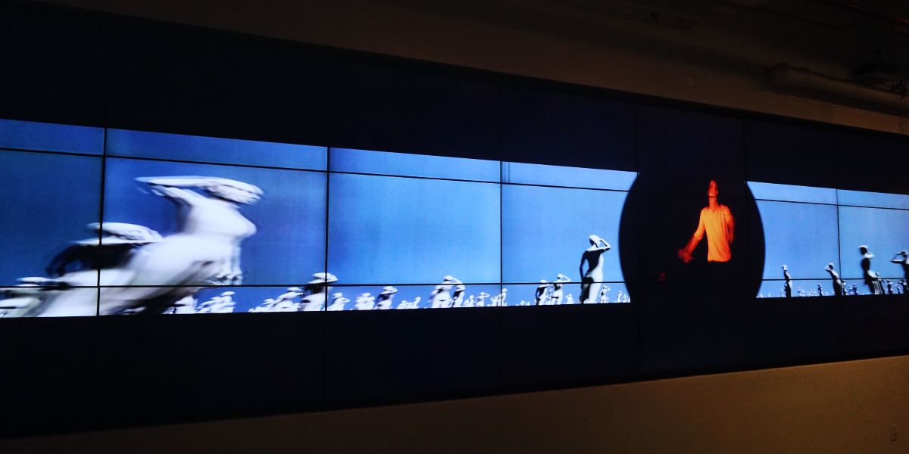
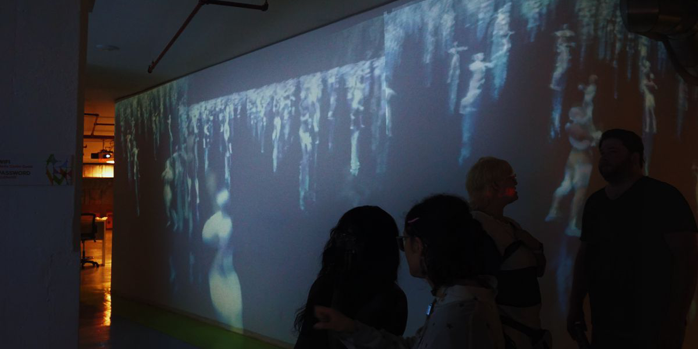

Collected Ego
A large scale audiovisual short about finding balance between self-discovery while relating to society. Made in collaboration with Annabel Mutale Reed, Jack Trzcinski, and Jarone Wright.
Presented at the IAC Building and the Made in NY Media Center by IFP.
Rhythm in doubt. Collected Ego is a journey of self-discovery and expression, being subjected to the gaze of society and finding yourself in inside of it.
 
In order to create contrast between the self and a homogenous society, we built a digital environment of replicated avatars that differentiate themselves from real life footage and choreography. This choreography was also recorded in a motion capture studio, bringing it into the fabricated 3d environment. This gave an uncanny characteristic to this very human movement, as the mass of avatars replicated each step with supernatural precision and timing.